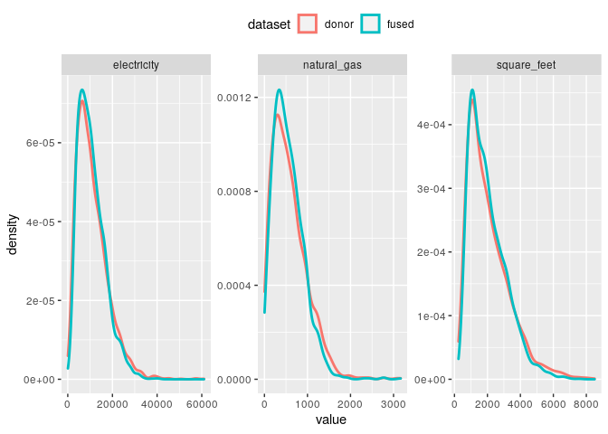
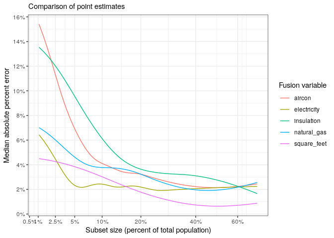

Kevin Ummel (ummel@berkeley.edu)
Overview
fusionModel enables variables unique to a “donor” dataset to be statistically simulated for (i.e. fused to) a “recipient” dataset. Variables common to both the donor and recipient are used to model and simulate the fused variables. The package provides a simple and efficient interface for general data fusion in R, leveraging state-of-the-art machine learning algorithms from Microsoft’s LightGBM framework. It also provides tools for analyzing synthetic/simulated data, calculating uncertainty, and validating fusion output.
fusionModel was developed to allow statistical integration of microdata from disparate social surveys. It is the data fusion workhorse underpinning the larger fusionACS data platform under development at the Socio-Spatial Climate Collaborative. In this context, fusionModel is used to fuse variables from a range of social surveys onto microdata from the American Community Survey, allowing for analysis and spatial resolution otherwise impossible.
Motivation
The desire to “fuse” or otherwise integrate independent datasets has a long history, dating to at least the early 1970’s (Ruggles and Ruggles 1974; Alter 1974). Social scientists have long recognized that large amounts of unconnected data are “out there” – usually concerning the characteristics of households and individuals (i.e. microdata) – which we would, ideally, like to integrate and analyze as a whole. This aim falls under the general heading of “Statistical Data Integration” (SDI) (Lewaa et al. 2021).
The most prominent examples of data fusion have involved administrative record linkage. This consists of exact matching or probabilistic linking of independent datasets, using observable information like social security numbers, names, or birth dates of individuals. Record linkage is the gold standard and can yield incredibly important insights and high levels of statistical confidence, as evidenced by the pioneering work of Raj Chetty and colleagues.
However, record linkage is rarely feasible for the kinds of microdata that most researchers use day-to-day (nevermind the difficulty of accessing administrative data). While the explosion of online tracking and social network data will undoubtedly offer new lines of analysis, for the time being, at least, social survey microdata remain indispensable. The challenge and promise recognized 50 years ago by Nancy and Richard Ruggles remains true today:
Unfortunately, no single microdata set contains all of the different kinds of information required for the problems which the economist wishes to analyze. Different microdata sets contain different kinds of information…A great deal of information is collected on a sample basis. Where two samples are involved the probability of the same individual appearing in both may be very small, so that exact matching is impossible. Other methods of combining the types of information contained in the two different samples into one microdata set will be required. (Ruggles and Ruggles 1974; 353-354)
Practitioners regularly impute or otherwise predict a variable or two from one dataset on to another. Piecemeal, ad hoc data fusion is a common necessity of quantitative research. Proper data fusion, on the other hand, seeks to systematically combine “two different samples into one microdata set”.
The size and nature of the samples involved and the intended analyses strongly influence the choice of data integration technique and the structure of the output. This has led to the relevant literature being both diverse and convoluted, as practitioners take on different data “setups” and objectives. In the context of fusionACS, we are interested in the following problem:
We have microdata from two independent surveys, A and B, that sample the same underlying population and time period (e.g. occupied U.S. households nationwide in 2018). We specify that A is the “recipient” dataset and B is the “donor”. The goal is to generate a new dataset, C, that has the original survey responses of A plus a realistic representation of how each respondent in A might have answered the questionnaire of survey B. To do this, we identify a set of common/shared variables X that both surveys solicit. We then attempt to fuse a set of variables unique to B – call them Z, the “fusion variables” – onto the original microdata of A, conditional on X.
Methodology
The fusion strategy implemented in the fusionModel package borrows and expands upon ideas from the statistical matching (D’Orazio et al. 2006), imputation (Little and Rubin 2019), and data synthesis (Drechsler 2011) literatures to create a flexible data fusion tool. It employs variable-k, conditional expectation matching that leverages high-performance gradient boosting algorithms. The package accommodates fusion of many variables, individually or in blocks, and efficient computation when the recipient is large relative to the donor.
Specifically, the goal was to create a data fusion tool that meets the following requirements:
- Accommodate donor and recipient datasets with divergent sample sizes
- Handle continuous, categorical, and semi-continuous (zero-inflated) variable types
- Ensure realistic values for fused variables
- Scale efficiently for larger datasets
- Fuse variables “one-by-one” or in “blocks”
- Employ a data modeling approach that:
- Makes no distributional assumptions (i.e. non-parametric)
- Automatically detects non-linear and interaction effects
- Automatically selects predictor variables from a potentially large set
- Ability to prevent overfitting (e.g. cross-validation)
Complete methodological details are available in the fusionACS Guidebook (INSERT LINK).
Simple fusion
The package includes example microdata from the 2015 Residential Energy Consumption Survey (see ?recs for details). For real-world use cases, the donor and recipient data are typically independent and vary in sample size. For illustrative purposes, we will randomly split the recs microdata into separate “donor” and “recipient” datasets with an equal number of observations.
# Rows to use for donor dataset
d <- seq(from = 1, to = nrow(recs), by = 2)
# Create donor and recipient datasets
donor <- recs[d, c(2:16, 20:22)]
recipient <- recs[-d, 2:14]
# Specify fusion and shared/common predictor variables
predictor.vars <- names(recipient)
fusion.vars <- setdiff(names(donor), predictor.vars)The recipient dataset contains 13 variables that are shared with donor. These shared “predictor” variables provide a statistical link between the two datasets. fusionModel exploits the information in these shared variables.
predictor.vars [1] "income" "age" "race" "education" "employment"
[6] "hh_size" "division" "urban_rural" "climate" "renter"
[11] "home_type" "year_built" "heat_type" There are 5 “fusion variables” unique to donor. These are the variables that will be fused to recipient. This includes a mix of continuous and categorical (factor) variables.
# The variables to be fused
sapply(donor[fusion.vars], class)$insulation
[1] "ordered" "factor"
$aircon
[1] "factor"
$square_feet
[1] "integer"
$electricity
[1] "numeric"
$natural_gas
[1] "numeric"We create a fusion model using the train() function. The minimal usage is shown below. See ?train for additional function arguments and options. By default, this results in a “.fsn” (fusion) object being saved to “fusion_model.fsn” in the current working directory.
# Train a fusion model
fsn.model <- train(data = donor,
y = fusion.vars,
x = predictor.vars)5 fusion variables
13 initial predictor variables
2843 observations
Using all available predictors for each fusion variable
Training step 1 of 5: insulation
Training step 2 of 5: aircon
Training step 3 of 5: square_feet
-- R-squared of cluster means: 0.967
-- Number of neighbors in each cluster:
Min. 1st Qu. Median Mean 3rd Qu. Max.
10.0 49.0 141.0 200.6 357.0 498.0
Training step 4 of 5: electricity
-- R-squared of cluster means: 0.966
-- Number of neighbors in each cluster:
Min. 1st Qu. Median Mean 3rd Qu. Max.
10.00 51.75 115.00 176.02 281.25 498.00
Training step 5 of 5: natural_gas
-- R-squared of cluster means: 0.968
-- Number of neighbors in each cluster:
Min. 1st Qu. Median Mean 3rd Qu. Max.
10.0 54.0 129.0 170.1 247.0 499.0
Fusion model saved to: /home/kevin/Documents/Projects/fusionModel/fusion_model.fsn
Total processing time: 8.53 secs To fuse variables to recipient, we simply pass the recipient data and path of the .fsn model to the fuse() function. Each variable specified in fusion.vars is fused in the order provided. By default, fuse() generates a single implicate (version) of synthetic outcomes. Later, we’ll work with multiple implicates to perform proper analysis and uncertainty estimation.
# Fuse 'fusion.vars' to the recipient
sim <- fuse(data = recipient,
fsn = fsn.model)5 fusion variables
13 initial predictor variables
2843 observations
Generating 1 implicate
Fusion step 1 of 5: insulation
-- Predicting LightGBM models
-- Simulating fused values
Fusion step 2 of 5: aircon
-- Predicting LightGBM models
-- Simulating fused values
Fusion step 3 of 5: square_feet
-- Predicting LightGBM models
-- Simulating fused values
Fusion step 4 of 5: electricity
-- Predicting LightGBM models
-- Simulating fused values
Fusion step 5 of 5: natural_gas
-- Predicting LightGBM models
-- Simulating fused values
Total processing time: 0.8 secs Let’s look at the the recipient dataset’s fused/simulated variables. Note that your results will look different, because each call to fuse() generates a unique, probabilistic set of outcomes.
head(sim) M insulation aircon square_feet
1: 1 Well insulated Central air conditioning system 1956
2: 1 Well insulated Central air conditioning system 1621
3: 1 Adequately insulated No air conditioning 558
4: 1 Adequately insulated Central air conditioning system 3072
5: 1 Adequately insulated Central air conditioning system 1010
6: 1 Adequately insulated No air conditioning 1910
electricity natural_gas
1: 17000 0.0
2: 6070 146.2
3: 1334 0.0
4: 9620 797.0
5: 37500 0.0
6: 11240 223.0We can do some quick sanity checks to compare the distribution of the fusion variables in donor with those in sim. This, at least, confirms that the fusion output is not obviously wrong. Later, we’ll perform a formal internal validation exercise using multiple implicates.
sim <- data.frame(sim)
# Compare means of the continuous variables
cbind(donor = colMeans(donor[fusion.vars[3:5]]), sim = colMeans(sim[fusion.vars[3:5]])) donor sim
square_feet 2070.784 2012.7306
electricity 10994.517 10675.6508
natural_gas 338.154 323.5523
# Compare frequencies of categorical variable classes
cbind(donor = table(donor$insulation), sim = table(sim$insulation)) donor sim
Not insulated 40 40
Poorly insulated 459 443
Adequately insulated 1401 1419
Well insulated 943 941 donor sim
Central air conditioning system 1788 1818
Individual window/wall or portable units 545 545
Both a central system and individual units 125 119
No air conditioning 385 361And we can look at kernel density plots of the non-zero values for the continuous variables to see if the univariate distributions in donor are generally similar in sim.

Advanced fusion
For this call to train(), we specify a set of hyperparameters to search over when training each LightGBM gradient boosting model (see ?train for details). The hyperparameters can be used to tune the underlying GBM models for better cross-validated performance. We also set nfolds = 10 (default is 5) to indicate the number of cross-validation folds to use. Since this requires additional computation, the cores argument is used to enable parallel processing.
# Train a fusion model with variable blocks
fsn.model <- train(data = donor,
y = fusion.vars,
x = predictor.vars,
nfolds = 10,
hyper = list(boosting = c("gbdt", "goss"),
num_leaves = c(10, 30),
feature_fraction = c(0.7, 0.9)),
cores = 2)5 fusion variables
13 initial predictor variables
2843 observations
Using all available predictors for each fusion variable
Using OpenMP multithreading within LightGBM (2 cores)
Training step 1 of 5: insulation
Training step 2 of 5: aircon
Training step 3 of 5: square_feet
-- R-squared of cluster means: 0.971
-- Number of neighbors in each cluster:
Min. 1st Qu. Median Mean 3rd Qu. Max.
10.0 61.0 142.0 198.4 330.0 499.0
Training step 4 of 5: electricity
-- R-squared of cluster means: 0.971
-- Number of neighbors in each cluster:
Min. 1st Qu. Median Mean 3rd Qu. Max.
10.0 61.0 179.0 220.7 388.0 499.0
Training step 5 of 5: natural_gas
-- R-squared of cluster means: 0.959
-- Number of neighbors in each cluster:
Min. 1st Qu. Median Mean 3rd Qu. Max.
10.0 70.0 193.0 217.6 340.0 499.0
Fusion model saved to: /home/kevin/Documents/Projects/fusionModel/fusion_model.fsn
Total processing time: 44.9 secs We generally want to create multiple versions of the simulated fusion variables – called implicates – in order to reduce bias in point estimates and calculate associated uncertainty. We can do this using the M argument within fuse(). Here we generate 10 implicates; i.e. 10 unique, probabilistic representations of what the recipient records might look like with respect to the fusion variables.
# Fuse multiple implicates to the recipient
sim10 <- fuse(data = recipient,
fsn = fsn.model,
M = 10)5 fusion variables
13 initial predictor variables
2843 observations
Generating 10 implicates
Fusion step 1 of 5: insulation
-- Predicting LightGBM models
-- Simulating fused values
Fusion step 2 of 5: aircon
-- Predicting LightGBM models
-- Simulating fused values
Fusion step 3 of 5: square_feet
-- Predicting LightGBM models
-- Simulating fused values
Fusion step 4 of 5: electricity
-- Predicting LightGBM models
-- Simulating fused values
Fusion step 5 of 5: natural_gas
-- Predicting LightGBM models
-- Simulating fused values
Total processing time: 2.38 secs Note that each implicate in sim10 is identified by the “M” variable/column.
head(sim10) M insulation aircon square_feet
1: 1 Well insulated Central air conditioning system 1728
2: 1 Adequately insulated Central air conditioning system 1492
3: 1 Well insulated No air conditioning 636
4: 1 Well insulated Central air conditioning system 2948
5: 1 Well insulated Individual window/wall or portable units 1140
6: 1 Adequately insulated No air conditioning 1579
electricity natural_gas
1: 13700 0.0
2: 15200 0.0
3: 1880 89.7
4: 8670 651.0
5: 14460 0.0
6: 14220 0.0
table(sim10$M)Analyzing fused data
The fused values are inherently probabilistic, reflecting uncertainty in the underlying statistical models. Multiple implicates are needed to calculate unbiased point estimates and associated uncertainty for any particular analysis of the data. In general, more implicates is preferable but requires more computation.
Since proper analysis of multiple implicates can be rather cumbersome – both from a coding and mathematical standpoint – the analyze() function provides a convenient way to calculate point estimates and associated uncertainty for common analyses. Potential analyses currently include variable means, proportions, sums, counts, and medians, (optionally) calculated for population subgroups.
For example, to calculate the mean value of the “electricity” variable across all observations in the recipient dataset, we do the following.
Using 10 implicates
Assuming uniform sample weights
Total processing time: 0.0344 secs
N y level type est moe
1: 2843 electricity NA mean 10808.86 232.2422When the response variable is categorical, analyze() automatically returns the proportions associated with each factor level.
Using 10 implicates
Assuming uniform sample weights
Total processing time: 0.0903 secs
N y level type est
1: 2843 aircon Central air conditioning system proportion 0.62866690
2: 2843 aircon Individual window/wall or portable units proportion 0.19212100
3: 2843 aircon Both a central system and individual units proportion 0.04400281
4: 2843 aircon No air conditioning proportion 0.13520929
moe
1: 0.017603881
2: 0.015537772
3: 0.007524075
4: 0.014413665If we want to perform an analysis across subsets of the recipient population – for example, calculate the mean value of “electricity” by household “income” – we can use the by and static arguments. We see that mean electricity consumption increases with household income.
Using 10 implicates
Assuming uniform sample weights
Total processing time: 0.0229 secs
income N y level type est moe
1: Less than $20,000 471 electricity NA mean 8884.312 478.0797
2: $20,000 - $39,999 645 electricity NA mean 9719.018 456.4553
3: $40,000 - $59,999 464 electricity NA mean 10537.228 538.0130
4: $60,000 to $79,999 372 electricity NA mean 11314.790 572.3587
5: $80,000 to $99,999 248 electricity NA mean 11550.401 693.7652
6: $100,000 to $119,999 222 electricity NA mean 12138.498 850.3994
7: $120,000 to $139,999 119 electricity NA mean 12490.518 1113.5339
8: $140,000 or more 302 electricity NA mean 13683.182 728.6027It is also possible to do multiple kinds of analyses in a single call to analyze(). For example, the following call calculates the mean value of “natural_gas” and “square_feet”, the median value of “square_feet”, and the sum of “electricity” (i.e. total consumption) and “insulation” (i.e. total count of each level). All of these estimates are calculated for each population subgroup defined by the intersection of “race” and “urban_rural” status.
result <- analyze(x = list(mean = c("natural_gas", "square_feet"),
median = "square_feet",
sum = c("electricity", "insulation")),
implicates = sim10,
static = recipient,
by = c("race", "urban_rural"))We can then (for example) isolate the results for white households in rural areas. Notice that the mean estimate of “square_feet” exceeds the median, reflecting the skewed distribution.
subset(result, race == "White" & urban_rural == "Rural") race urban_rural N y level type est
1: White Rural 503 electricity <NA> sum 6906696.6100
2: White Rural 503 insulation Not insulated count 5.6000
3: White Rural 503 insulation Poorly insulated count 68.4000
4: White Rural 503 insulation Adequately insulated count 209.7000
5: White Rural 503 insulation Well insulated count 219.3000
6: White Rural 503 natural_gas <NA> mean 157.5723
7: White Rural 503 square_feet <NA> mean 2387.3509
8: White Rural 503 square_feet <NA> median 2159.4000
moe
1: 3.115890e+05
2: 5.653837e+00
3: 2.178315e+01
4: 3.144372e+01
5: 3.613723e+01
6: 2.579220e+01
7: 1.164896e+02
8: 1.573095e+02More complicated analyses can be performed using the custom fun argument to analyze(). See the Examples section of ?analyze.
Validating fusion models
The validate() function provides a convenient way to perform internal validation tests on synthetic variables that have been fused back onto the original donor data. This allows us to assess the quality of the underlying fusion model; it is analogous to assessing model skill by comparing predictions to the observed training data.
validate() compares analytical results derived using the multiple-implicate fusion output with those derived using the original donor microdata. By performing analyses on population subsets of varying size, validate() estimates how the synthetic variables perform for analyses of varying difficulty/complexity. It computes fusion variable means and proportions for subsets of the full sample – separately for both the observed and fused data – and then compares the results.
First, we fuse multiple implicates of the fusion.vars using the original donor data – not the recipient data, as we did previously.
sim <- fuse(data = donor,
fsn = fsn.model,
M = 40)5 fusion variables
13 initial predictor variables
2843 observations
Generating 40 implicates
Fusion step 1 of 5: insulation
-- Predicting LightGBM models
-- Simulating fused values
Fusion step 2 of 5: aircon
-- Predicting LightGBM models
-- Simulating fused values
Fusion step 3 of 5: square_feet
-- Predicting LightGBM models
-- Simulating fused values
Fusion step 4 of 5: electricity
-- Predicting LightGBM models
-- Simulating fused values
Fusion step 5 of 5: natural_gas
-- Predicting LightGBM models
-- Simulating fused values
Total processing time: 7.8 secs Next, we pass the sim results to validate(). The argument subset_vars specifies that we want the validation exercise to compare observed (donor) and simulated point estimates across population subsets defined by “income”, “age”, “race”, and “education”. See ?validate for more details.
valid <- validate(observed = donor,
implicates = sim,
subset_vars = c("income", "age", "race", "education"))Assuming uniform sample weights
One-hot encoding categorical fusion variables
Correlation between observed and fused values:
Min. 1st Qu. Median Mean 3rd Qu. Max.
0.075 0.109 0.255 0.303 0.431 0.774
Processing validation analyses for 5 fusion variables
Performed 1430 analyses across 130 subsets
Smoothing validation metrics
Average smoothed performance metrics across subset range:
y est vad moe
1 aircon 0.0323 0.689 1.37
2 electricity 0.0225 0.419 1.06
3 insulation 0.0390 0.492 1.41
4 natural_gas 0.0277 0.500 1.06
5 square_feet 0.0146 0.788 1.18
Creating ggplot2 graphics
Total processing time: 3.14 secs The validate() output includes ggplot2 graphics that helpfully summarize the validation results. For example, the plot below shows how the observed and simulated point estimates compare, using median absolute percent error as the performance metric. We see that the synthetic data do a very good job reproducing the point estimates for all fusion variables when the population subset in question is reasonably large. For smaller subsets – i.e. more difficult analyses due to small sample size – “square_feet”, “natural_gas”, and “electricity” remain well modeled, but the error increases more rapidly for “aircon” and “insulation”. This information is useful for understanding what kind of reliability we can expect for particular variables and types of analyses, given the underlying fusion model and data.
valid$plots$est
Happy fusing!